This section describes the use of the CUDD package as a black box.
To build an application that uses the CUDD package, you should add
#include "util.h" #include "cudd.h"to your source files, and should link
libcudd.a,
libmtr.a,
libst.a, and
libutil.a to your executable. (All these
libraries are part of the distribution.) Some
platforms require specific compiler and linker flags. Refer to the
Makefile in the top level directory of the
distribution.
Keep in mind that whatever flags affect the size of data structures--for instance the flags used to use 64-bit pointers where available--must be specified when compiling both CUDD and the files that include its header files.
BDDs, ADDs, and ZDDs are made of DdNode's. A DdNode (node for short) is a structure with several fields. Those that are of interest to the application that uses the CUDD package as a black box are the variable index, the reference count, and the value. The remaining fields are pointers that connect nodes among themselves and that are used to implement the unique table. (See Section 3.2.2.)
The index field holds the name of the variable that labels the node. The index of a variable is a permanent attribute that reflects the order of creation. Index 0 corresponds to the variable created first. On a machine with 32-bit pointers, the maximum number of variables is the largest value that can be stored in an unsigned short integer minus 1. The largest index is reserved for the constant nodes. When 64-bit pointers are used, the maximum number of variables is the largest value that can be stored in an unsigned integer minus 1.
When variables are reordered to reduce the size of the decision diagrams, the variables may shift in the order, but they retain their indices. The package keeps track of the variable permutation (and its inverse). The application is not affected by variable reordering, except in the following cases.
The CUDD package relies on garbage collection to reclaim the memory used by diagrams that are no longer in use. The scheme employed for garbage collection is based on keeping a reference count for each node. The references that are counted are both the internal references (references from other nodes) and external references (typically references from the calling environment). When an application creates a new BDD, ADD, or ZDD, it must increase its reference count explicitly, through a call to Cudd_Ref. Similarly, when a diagram is no longer needed, the application must call Cudd_RecursiveDeref (for BDDs and ADDs) or Cudd_RecursiveDerefZdd (for ZDDs) to ``recycle'' the nodes of the diagram.
Terminal nodes carry a value. This is especially important for ADDs. By default, the value is a double. To change to something different (e.g., an integer), the package must be modified and recompiled. Support for this process is currently very rudimentary.
All nodes used in BDDs, ADDs, and ZDDs are kept in special hash tables called the unique tables. Specifically, BDDs and ADDs share the same unique table, whereas ZDDs have their own table. As the name implies, the main purpose of the unique table is to guarantee that each node is unique; that is, there is no other node labeled by the same variable and with the same children. This uniqueness property makes decision diagrams canonical. The unique tables and some auxiliary data structures make up the DdManager (manager for short). Though the application that uses only the exported functions needs not be concerned with most details of the manager, it has to deal with the manager in the following sense. The application must initialize the manager by calling an appropriate function. (See Section 3.3.) Subsequently, it must pass a pointer to the manager to all the functions that operate on decision diagrams.
With the exception of a few statistical counters, there are no global variables in the CUDD package. Therefore, it is quite possible to have multiple managers simultaneously active in the same application.1 It is the pointers to the managers that tell the functions on what data they should operate.
Efficient recursive manipulation of decision diagrams requires the use of a table to store computed results. This table is called here the cache because it is effectively handled like a cache of variable but limited capacity. The CUDD package starts by default with a small cache, and increases its size until either no further benefit is achieved, or a limit size is reached. The user can influence this policy by choosing initial and limit values for the cache size.
Too small a cache will cause frequent overwriting of useful results. Too large a cache will cause overhead, because the whole cache is scanned every time garbage collection takes place. The optimal parameters depend on the specific application. The default parameters work reasonably well for a large spectrum of applications.
The cache of the CUDD package is used by most recursive functions of the package, and can be used by user-supplied functions as well. (See Section 4.4.)
To use the functions in the CUDD package, one has first to initialize the package itself by calling Cudd_Init. This function takes four parameters:
manager = Cudd_Init(0,0,CUDD_UNIQUE_SLOTS,CUDD_CACHE_SLOTS,0);To reclaim all the memory associated with a manager, an application must call Cudd_Quit. This is normally done before exiting.
The package provides several functions to set the parameters that control various functions. For instance, the package has an automatic way of determining whether a larger unique table would make the application run faster. In that case, the package enters a ``fast growth'' mode in which resizing of the unique subtables is favored over garbage collection. When the unique table reaches a given size, however, the package returns to the normal ``slow growth'' mode, even though the conditions that caused the transition to fast growth still prevail. The limit size for fast growth can be read by Cudd_ReadLooseUpTo and changed by Cudd_SetLooseUpTo. Similar pairs of functions exist for several other parameters. See also Section 4.8.
The CUDD Package defines several constant functions. These functions are created when the manager is initialized, and are accessible through the manager itself.
The constant 1 (returned by Cudd_ReadOne) is common to BDDs, ADDs, and ZDDs. However, its meaning is different for ADDs and BDDs, on the one hand, and ZDDs, on the other hand. The diagram consisting of the constant 1 node only represents the constant 1 function for ADDs and BDDs. For ZDDs, its meaning depends on the number of variables: It is the conjunction of the complements of all variables. Conversely, the representation of the constant 1 function depends on the number of variables. The constant 1 function of 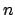 variables is returned by Cudd_ReadZddOne.
The constant 0 is common to ADDs and ZDDs, but not to BDDs. The BDD logic 0 is not associated with the constant 0 function: It is obtained by complementation (Cudd_Not) of the constant 1. (It is also returned by Cudd_ReadLogicZero.) All other constants are specific to ADDs.
Besides 0 (returned by Cudd_ReadZero) and 1, the following constant functions are created at initialization time.
-ieee_with_no_inexact or
-ieee_with_inexact must be passed to the DEC compiler to get
support of the IEEE standard. (The compiler still produces a
warning, but it can be ignored.) Compiling with
those options may cause substantial performance degradation on the
Evolution IV CPUs. (Especially if the application does use the
infinities.) The problem is reportedly solved in the Evolution V
CPUs. If gcc is used to compile CUDD on the
Alphas, the symbol HAVE_IEEE_754
must be undefined. (See the Makefile for the
details.) The values of these constants are returned by
Cudd_ReadPlusInfinity and
Cudd_ReadMinusInfinity.
The background value is a constant typically used to represent non-existing arcs in graphs. Consider a shortest path problem. Two nodes that are not connected by an arc can be regarded as being joined by an arc of infinite length. In shortest path problems, it is therefore convenient to set the background value to PlusInfinity. In network flow problems, on the other hand, two nodes not connected by an arc can be regarded as joined by an arc of 0 capacity. For these problems, therefore, it is more convenient to set the background value to 0. In general, when representing sparse matrices, the background value is the value that is assumed implicitly.
At initialization, the background value is set to 0. It can be read with Cudd_ReadBackground, and modified with Cudd_SetBackground. The background value affects procedures that read sparse matrices/graphs (Cudd_addRead and Cudd_addHarwell), procedures that print out sum-of-product expressions for ADDs (Cudd_PrintMinterm), generators of cubes (Cudd_ForeachCube), and procedures that count minterms (Cudd_CountMinterm).
New constant can be created by calling Cudd_addConst. This function will retrieve the ADD for the desired constant, if it already exist, or it will create a new one. Obviously, new constants should only be used when manipulating ADDs.
Decision diagrams are typically created by combining simpler decision diagrams. The simplest decision diagrams, of course, cannot be created in that way. Constant functions have been discussed in Section 3.5. In this section we discuss the simple variable functions, also known as projection functions.
The projection functions are distinct for BDDs and ADDs. A projection function for BDDs consists of an internal node with both outgoing arcs pointing to the constant 1. The else arc is complemented.
An ADD projection function, on the other hand, has the else pointer directed to the arithmetic zero function. One should never mix the two types of variables. BDD variables should be used when manipulating BDDs, and ADD variables should be used when manipulating ADDs. Three functions are provided to create BDD variables:
Unlike the projection functions of BDDs and ADDs, the
projection functions of ZDDs have diagrams
with 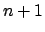 nodes, where is the number of variables. Therefore the
ZDDs of the projection functions change when new variables are added.
This will be discussed in Section 3.9. Here we assume
that the number of variables is fixed. The ZDD of the  -th
projection function is returned by
Cudd_zddIthVar.
-th
projection function is returned by
Cudd_zddIthVar.
Common manipulations of BDDs can be accomplished by calling
Cudd_bddIte. This function takes three BDDs, , , and
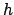, as arguments and computes
 . Like all the
functions that create new BDDs or ADDs, Cudd_bddIte returns a result that must be
explicitly referenced by the caller. Cudd_bddIte can be used
to implement all two-argument boolean functions. However, the package
also provides Cudd_bddAnd as well as the
other two-operand boolean functions, which are slightly more efficient
when a two-operand function is called for. The following fragment of
code illustrates how to build the BDD for the function
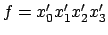.
. Like all the
functions that create new BDDs or ADDs, Cudd_bddIte returns a result that must be
explicitly referenced by the caller. Cudd_bddIte can be used
to implement all two-argument boolean functions. However, the package
also provides Cudd_bddAnd as well as the
other two-operand boolean functions, which are slightly more efficient
when a two-operand function is called for. The following fragment of
code illustrates how to build the BDD for the function
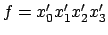.
DdManager *manager;
DdNode *f, *var, *tmp;
int i;
...
f = Cudd_ReadOne(manager);
Cudd_Ref(f);
for (i = 3; i >= 0; i--) {
var = Cudd_bddIthVar(manager,i);
tmp = Cudd_bddAnd(manager,Cudd_Not(var),f);
Cudd_Ref(tmp);
Cudd_RecursiveDeref(manager,f);
f = tmp;
}
This example illustrates the following points:
f = tmp; Cudd_Ref(f); Cudd_RecursiveDeref(manager,tmp);but is more efficient. The reference is ``passed'' from tmp to f, and tmp is now ready to be reutilized.
The most common way to manipulate ADDs is via Cudd_addApply. This function can apply a wide variety of operators to a pair of ADDs. Among the available operators are addition, multiplication, division, minimum, maximum, and boolean operators that work on ADDs whose leaves are restricted to 0 and 1 (0-1 ADDs).
The following fragment of code illustrates how to build the ADD for the function 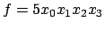.
DdManager *manager;
DdNode *f, *var, *tmp;
int i;
...
f = Cudd_addConst(manager,5);
Cudd_Ref(f);
for (i = 3; i >= 0; i--) {
var = Cudd_addIthVar(manager,i);
Cudd_Ref(var);
tmp = Cudd_addApply(manager,Cudd_addTimes,var,f);
Cudd_Ref(tmp);
Cudd_RecursiveDeref(manager,f);
Cudd_RecursiveDeref(manager,var);
f = tmp;
}
This example, contrasted to the example of BDD manipulation,
illustrates the following points:
ZDDs are often generated by converting existing BDDs. (See Section 3.11.) However, it is also possible to build ZDDs by applying boolean operators to other ZDDs, starting from constants and projection functions. The following fragment of code illustrates how to build the ZDD for the function 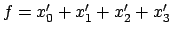. We assume that the four variables already exist in the manager when the ZDD for is built. Note the use of De Morgan's law.
DdManager *manager;
DdNode *f, *var, *tmp;
int i;
manager = Cudd_Init(0,4,CUDD_UNIQUE_SLOTS,
CUDD_CACHE_SLOTS,0);
...
tmp = Cudd_ReadZddOne(manager,0);
Cudd_Ref(tmp);
for (i = 3; i >= 0; i--) {
var = Cudd_zddIthVar(manager,i);
Cudd_Ref(var);
f = Cudd_zddIntersect(manager,var,tmp);
Cudd_Ref(f);
Cudd_RecursiveDerefZdd(manager,tmp);
Cudd_RecursiveDerefZdd(manager,var);
tmp = f;
}
f = Cudd_zddDiff(manager,Cudd_ReadZddOne(manager,0),tmp);
Cudd_Ref(f);
Cudd_RecursiveDerefZdd(manager,tmp);
This example illustrates the following points:
Several procedures are provided to convert ADDs to BDDs, according to different criteria. (Cudd_addBddPattern, Cudd_addBddInterval, and Cudd_addBddThreshold.) The conversion from BDDs to ADDs (Cudd_BddToAdd) is based on the simple principle of mapping the logical 0 and 1 on the arithmetic 0 and 1. It is also possible to convert an ADD with integer values (more precisely, floating point numbers with 0 fractional part) to an array of BDDs by repeatedly calling Cudd_addIthBit.
Many applications first build a set of BDDs and then derive ZDDs from the BDDs. These applications should create the manager with 0 ZDD variables and create the BDDs. Then they should call Cudd_zddVarsFromBddVars to create the necessary ZDD variables--whose number is likely to be known once the BDDs are available. This approach eliminates the difficulties that arise when the number of ZDD variables changes while ZDDs are being built.
The simplest conversion from BDDs to ZDDs is a simple change of representation, which preserves the functions. Simply put, given a BDD for , a ZDD for is requested. In this case the correspondence between the BDD variables and ZDD variables is one-to-one. Hence, Cudd_zddVarsFromBddVars should be called with the multiplicity parameter equal to 1. The conversion proper can then be performed by calling Cudd_zddPortFromBdd. The inverse transformation is performed by Cudd_zddPortToBdd.
ZDDs are quite often used for the representation of
covers. This is normally done by
associating two ZDD variables to each variable of the function. (And
hence, typically, to each BDD variable.) One ZDD variable is
associated with the positive literal of the BDD variable, while the
other ZDD variable is associated with the negative literal. A call to
Cudd_zddVarsFromBddVars with
multiplicity equal to 2 will associate to BDD variable  the
two ZDD variables 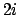 and 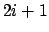.
the
two ZDD variables 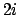 and 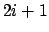.
If a BDD variable group tree exists when Cudd_zddVarsFromBddVars is called (see Section 3.13) the function generates a ZDD variable group tree consistent to it. In any case, all the ZDD variables derived from the same BDD variable are clustered into a group.
If the ZDD for is created and later a new ZDD variable is added to the manager, the function represented by the existing ZDD changes. Suppose, for instance, that two variables are initially created, and that the ZDD for 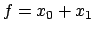 is built. If a third variable is added, say 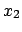, then the ZDD represents 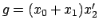 instead. This change in function obviously applies regardless of what use is made of the ZDD. However, if the ZDD is used to represent a cover, the cover itself is not changed by the addition of new variable. (What changes is the characteristic function of the cover.)
The CUDD package provides a rich set of dynamic reordering algorithms. Some of them are slight variations of existing techniques [16,6,2,10,15,11]; some others have been developed specifically for this package [14,13].
Reordering affects a unique table. This means that BDDs and ADDs, which share the same unique table are simultaneously reordered. ZDDs, on the other hand, are reordered separately. In the following we discuss the reordering of BDDs and ADDs. Reordering for ZDDs is the subject of Section 3.14.
Reordering of the variables can be invoked directly by the application by calling Cudd_ReduceHeap. Or it can be automatically triggered by the package when the number of nodes has reached a given threshold. (The threshold is initialized and automatically adjusted after each reordering by the package.) To enable automatic dynamic reordering (also called asynchronous dynamic reordering in this document) the application must call Cudd_AutodynEnable. Automatic dynamic reordering can subsequently be disabled by calling Cudd_AutodynDisable.
All reordering methods are available in both the case of direct call to Cudd_ReduceHeap and the case of automatic invocation. For many methods, the reordering procedure is iterated until no further improvement is obtained. We call these methods the converging methods. When constraints are imposed on the relative position of variables (see Section 3.13) the reordering methods apply inside the groups. The groups themselves are reordered by sifting. Each method is identified by a constant of the enumerated type Cudd_ReorderingType defined in cudd.h (the external header file of the CUDD package):
In reality, things are a bit more complicated. For instance, there is a limit on the number of variables that will be sifted. This limit can be read with Cudd_ReadSiftMaxVar and set with Cudd_SetSiftMaxVar. In addition, if the diagram grows too much while moving a variable up or down, that movement is terminated before the variable has reached one end of the order. The maximum ratio by which the diagram is allowed to grow while a variable is being sifted can be read with Cudd_ReadMaxGrowth and set with Cudd_SetMaxGrowth.
CUDD allows the application to specify constraints on the positions of group of variables. It is possible to request that a group of contiguous variables be kept contiguous by the reordering procedures. It is also possible to request that the relative order of some groups of variables be left unchanged. The constraints on the order are specified by means of a tree, which is created in one of two ways:
Each node in the tree represents a range of variables. The lower bound of the range is given by the low field of the node, and the size of the group is given by the size field of the node.2 The variables in each range are kept contiguous. Furthermore, if a node is marked with the MTR_FIXED flag, then the relative order of the variable ranges associated to its children is not changed. As an example, suppose the initial variable order is:
x0, y0, z0, x1, y1, z1, ... , x9, y9, z9.Suppose we want to keep each group of three variables with the same index (e.g.,
x3, y3, z3) contiguous, while allowing the package
to change the order of the groups. We can accomplish this with the
following code:
for (i = 0; i < 10; i++) {
(void) Cudd_MakeTreeNode(manager,i*3,3,MTR_DEFAULT);
}
If we want to keep the order within each group of variables
fixed (i.e., x before y before z) we need to
change MTR_DEFAULT into MTR_FIXED.
The low parameter passed to Cudd_MakeTreeNode is the index of a variable (as opposed to its level or position in the order). The group tree can be created at any time. The result obviously depends on the variable order in effect at creation time.
It is possible to create a variable group tree also before the variables themselves are created. The package assumes in this case that the index of the variables not yet in existence will equal their position in the order when they are created. Therefore, applications that rely on Cudd_bddNewVarAtLevel or Cudd_addNewVarAtLevel to create new variables have to create the variables before they group them.
The reordering procedure will skip all groups whose variables are not yet in existence. For groups that are only partially in existence, the reordering procedure will try to reorder the variables already instantiated, without violating the adjacency constraints.
Reordering of ZDDs is done in much the same way as the reordering of BDDs and ADDs. The functions corresponding to Cudd_ReduceHeap and Cudd_ShuffleHeap are Cudd_zddReduceHeap and Cudd_zddShuffleHeap. To enable dynamic reordering, the application must call Cudd_AutodynEnableZdd, and to disable dynamic reordering, it must call Cudd_AutodynDisableZdd. In the current implementation, however, the choice of reordering methods for ZDDs is more limited. Specifically, these methods are available:
To create ZDD variable groups, the application calls Cudd_MakeZddTreeNode.
Several applications that manipulate both BDDs and ZDDs benefit from keeping a fixed correspondence between the order of the BDD variables and the order of the ZDD variables. If each BDD variable corresponds to a group of ZDD variables, then it is often desirable that the groups of ZDD variables be in the same order as the corresponding BDD variables. CUDD allows the ZDD order to track the BDD order and vice versa. To have the ZDD order track the BDD order, the application calls Cudd_zddRealignEnable. The effect of this call can be reversed by calling Cudd_zddRealignDisable. When ZDD realignment is in effect, automatic reordering of ZDDs should be disabled.
Hooks in CUDD are lists of application-specified functions to be run on certain occasions. Each hook is identified by a constant of the enumerated type Cudd_HookType. In Version 2.5.0 hooks are defined for these occasions:
It is possible to set a time limit for a manger with Cudd_SetTimeLimit. Once set, the time available to the manager can be modified through other API functions. CUDD checks for expiration periodically. When time has expired, it returns NULL from the call in progress, but it leaves the manager in a consistent state. The invoking application must be designed to handle the NULL values returned.
When reordering, if a timout is approaching, CUDD will quit reordering to give the application a chance to finish some computation.
It is also possible to invoke some functions that return NULL if they cannot complete without creating more than a set number of nodes. See, for instance, Cudd_bddAndLimit.
The CUDD package contains interface functions that emulate the behavior of the original BDD package used in SIS [17] and in the newer VIS [4]. How to build VIS with CUDD is described in the installation documents of VIS. (Version 1.1 and later.)
This section describes how to build SIS with the CUDD package. Let SISDIR designate the root of the directory hierarchy where the sources for SIS reside. Let CUDDDIR be the root of the directory hierarchy where the distribution of the CUDD package resides. To build SIS with the CUDD package, follow these steps.
The replacement for the st library is because the version shipped with the CUDD package tests for out-of-memory conditions. Notice that the version of the st library to be used for replacement is not the one used for the normal build, because the latter has been modified for C++ compatibility. The above installation procedure has been tested on SIS 1.3. SIS can be obtained via anonymous FTP from ic.eecs.berkeley.edu. To build SIS 1.3, you need sis-1.2.tar.Z and sis-1.2.patch1.Z. When compiling on a DEC Alpha, you should add the -ieee_with_no_inexact flag. (See Section 3.5.2.) Refer to the Makefile in the top level directory of the distribution for how to compile with 32-bit pointers.
The CUDD package provides several functions to write decision diagrams to a file. Cudd_DumpBlif writes a file in blif format. It is restricted to BDDs. The diagrams are written as a network of multiplexers, one multiplexer for each internal node of the BDD.
Cudd_DumpDot produces input suitable to the graph-drawing program dot written by Eleftherios Koutsofios and Stephen C. North. An example of drawing produced by dot from the output of Cudd_DumpDot is shown in Figure 1. It is restricted to BDDs and ADDs.
Cudd_DumpDaVinci produces input suitable to the graph-drawing program daVinci developed at the University of Bremen. It is restricted to BDDs and ADDs.
Functions are also available to produce the input format of DDcal (see Section 2.2) and factored forms.
The dddmp library by Gianpiero Cabodi and Stefano Quer allows a CUDD application to save BDDs to disk in compact form for later retrieval. See the library's own documentation for the details.